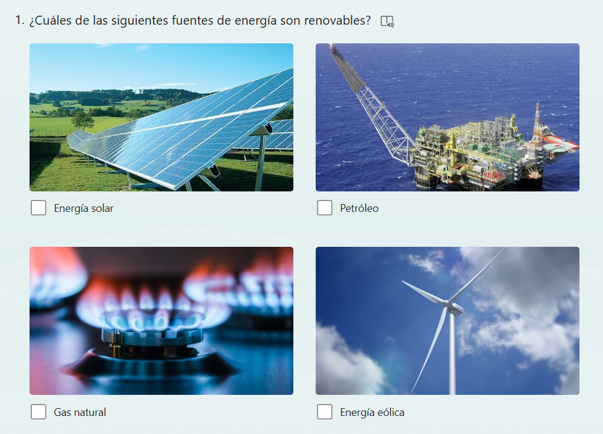
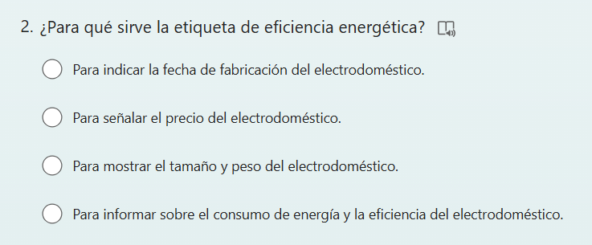

Desarrollo de las sesiones
Materiales para leer o ver en casa.
¿Qué tenemos que hacer y cómo?
Elaborar un CUESTIONARIO en Forms de, al menos, 10 preguntas, sobre los contenidos trabajados en la situación de aprendizaje, utilizando un lenguaje científico y el vocabulario trabajado.
Empezamos la clase (10 minutos)
El docente presenta la actividad de elaborar un CUESTIONARIO en Forms con preguntas sobre los contenidos trabajados. Explica los objetivos de la tarea y el vocabulario trabajado para crear preguntas significativas.
Algunos ejemplos de preguntas son:


Crear el cuestionario (30 minutos)
Cada estudiante elaborará un Forms con, al menos, 10 preguntas sobre los contenidos trabajados, utilizando un lenguaje claro y científico.
Comparte tu cuestionario en Teams.
Responder a los cuestionarios de tus compañeros (20 minutos)
Una vez elaborados todos los Forms, se compartirán en el grupo de Teams para que sean respondidos por el resto de los compañeros de clase. Esta tarea se puede continuar en casa.